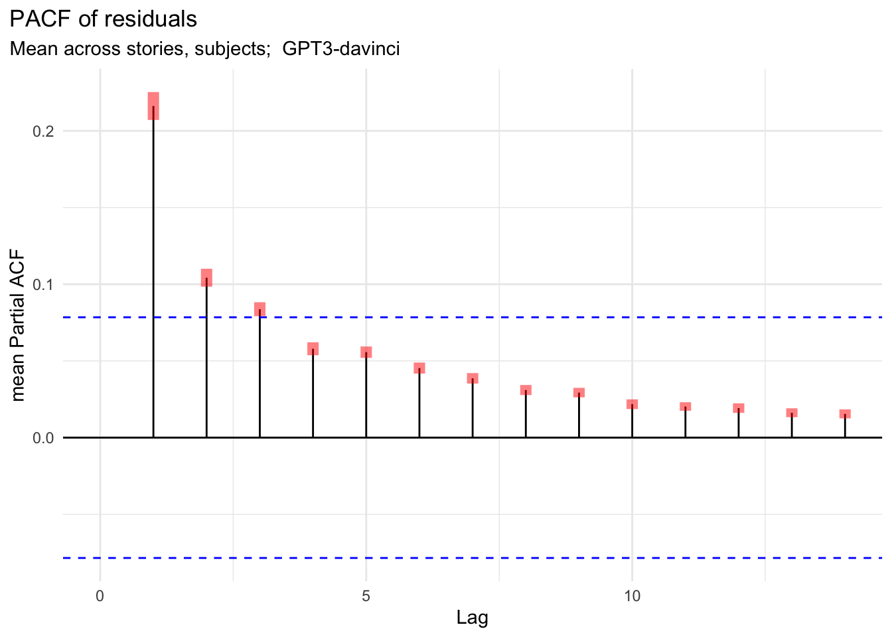

options
# Where data lives (plot data from GAM fits, etc)
datadir <- "./data/"
# Where to put generated plots
figsdir <- "./figures/"# Where data lives (plot data from GAM fits, etc)
datadir <- "./data/"
# Where to put generated plots
figsdir <- "./figures/"# knitr::opts_knit$set(root.dir = rprojroot::find_rstudio_root_file())
library(dplyr)
library(magrittr)
library(stringr)
library(ggplot2)
library(patchwork)
theme_set(theme_minimal())
theme_update(plot.title.position = "plot")
## Names
context_len_labs <- c(
max = "maximum",
`80` = "80 words",
bysent = "within sent."
)
est_type_labs <- c(
mean = "mean",
var = "variance"
)
term_labs <- c(
surprisal = "surprisal (on mean)",
`surprisal.1` = "surprisal (on log sd)"
)
model_labs <- c(
boyce_ngram = "n-gram",
boyce_grnn = "LSTM",
"TXL" = "TXL",
"GPT2" = "GPT2",
"GPT2-large" = "GPT2-large",
"GPT2-xl" = "GPT2-xl",
"GPT-Neo" = "GPT-Neo",
"GPT-J" = "GPT-J",
"GPT3-ada" = "GPT3-ada",
"GPT3-curie" = "GPT3-curie",
"GPT3-davinci" = "GPT3-davinci"
)
lm_names <- list(
"boyce_ngram", "boyce_grnn",
"TXL",
"GPT2",
"GPT2-large",
"GPT2-xl",
"GPT-Neo",
"GPT-J",
"GPT3-ada",
"GPT3-curie",
"GPT3-davinci"
) %>% set_names(., .)
## Utils
separate_modelnames <- function(df, modelnames_colname = model, names = lm_names) {
df %>%
tidyr::separate({{modelnames_colname}},
into = c("model", "by"), sep = "_", extra = "merge") %>%
mutate(model = ifelse(model == "boyce", paste0("boyce_", by), model)) %>%
mutate(context_len = ifelse(
is.na(by), "max", ifelse(stringr::str_starts(model, "boyce"), "bysent", by))
) %>% select(-by) %>%
mutate(context_len = forcats::fct_relevel(context_len, c("max")),
model = forcats::fct_relevel(model, lm_names))
}
# for nicer plot labels
my_labeller <- labeller(
context_len = context_len_labs,
term = term_labs,
model = model_labs,
est_type=c(mean="mean RT", var=glue::glue("log(sd RT)")))# Whether to only plot two context lengths or all three
twocontexts <- TRUE # (re-run notebook after modifying)
if (twocontexts) {
context_lens <- c("max", "bysent")
context_pref <- "2"
} else {
context_lens <- c("max", "80", "bysent")
context_pref <- ""
}Plotting the fits of GAM smooths for effect of surprisal on mean and variance in RT.
load_in_data<- function(f, with_est_types = TRUE) {
d <- readr::read_csv(f,
col_names = TRUE, show_col_types = FALSE) %>%
mutate(context_len = forcats::fct_relevel(context_len, c("max")),
model = forcats::fct_relevel(model, lm_names))
if (with_est_types) d <- d %>% mutate(est_type = factor(est_type))
return(d)
}
# get surprisal means and densities
# (from natural-stories-surprisals/EDA_surps_SPRT.Rmd)
surprisal_densities <- load_in_data(
paste0(datadir, "surprisal_densities.csv"), with_est_types = F) %>%
# there is some odd point at ~37 this makes an unnecessarily long tail
filter(model %in% lm_names, surprisal < 25)
surprisal_means <- load_in_data(
paste0(datadir, "surprisal_means.csv"), with_est_types = F) %>%
filter(model %in% lm_names)
models_in_desc_PPL_order <- surprisal_means %>%
filter(context_len == "max" | model %>% stringr::str_starts("boyce")) %>%
arrange(desc(mean_surprisal)) %>% pull(model) %>% as.vector
# GAMs fit for paper (using fitdata=surps_lms.RTs.rds, and correct lagging)
# smooth0var: nonlinear gaussian models with constant variance
data_to_plot_var0_gauss_wprev <- load_in_data(
paste0(datadir, "GAM_predictions/data_to_plot_NEW_var0_gauss_wprev_N200.csv"))
data_to_plot_var0_gauss_w3prev <- load_in_data(
paste0(datadir, "GAM_predictions/data_to_plot_NEW_var0_gauss_w3prev_N200.csv"))
##### Linear control with constant variance, with previous, with family=gaulss()
data_to_plot_lin0var_wprev <- load_in_data(
paste0(datadir, "GAM_predictions/data_to_plot_NEW_lin0var_wprev_N200.csv"))
##### Linear control with constant variance, with previous, with family=gaulss()
data_to_plot_linear_wprevm <- load_in_data(
paste0(datadir, "GAM_predictions/data_to_plot_NEW_linear_wprevm_N200.csv"))
##### Main models: Smooth GAMs with previous surprisal predictors for mean only
data_to_plot_smooth_wprevm <- load_in_data(
paste0(datadir, "GAM_predictions/data_to_plot_NEW_wprevm_N200.csv"))
#### As above (Smooth GAMs with previous surprisal for mean),
#### but removing most surprising items
# Note, only for GPT-3 Davinci full-context.
data_to_plot_datasubsetless6_smooth_wprevm <- load_in_data(
paste0(datadir, "GAM_predictions/data_to_plot_NEW_datasubsetless6_wprevm_N200.csv")) %>%
mutate(cutoff = 6)
data_to_plot_datasubsetless12_smooth_wprevm <- load_in_data(
paste0(datadir, "GAM_predictions/data_to_plot_NEW_datasubsetless12_wprevm_N200.csv")) %>%
mutate(cutoff = 12)plot_data <- function(
data_to_plot, use_shifted_est=TRUE,
se.mult=1.96, # use approx qnorm(1 - 0.05/2)
trans = I, #transform function to apply to the yvalues
controls = NULL,
surp_units = "nats",
density_df = surprisal_densities,
static_lty = NULL,
additional_controls = NULL,
ylab = "fitted effect\nestimate (+ intercept) ±2*SE",
...) {
if (surp_units == "bits") {
data_to_plot <- data_to_plot %>% mutate(surprisal = surprisal / log(2))
if (!is.null(controls)) {
controls <- controls %>% mutate(surprisal = surprisal / log(2))
}
xlab <- "surprisal (bits)"; xbreaks <- seq(0, 50, 15)
} else if (surp_units == "nats") {
xlab <- "surprisal (nats)"; xbreaks <- seq(0, 30, 10)
}
if (use_shifted_est) data_to_plot <- mutate(data_to_plot, est = est_shifted)
p <- data_to_plot %>%
ggplot(aes(x = surprisal, y = trans(est),
ymin = trans(est - se.mult*se), ymax = trans(est + se.mult*se),
fill = context_len))
if (!is.null(controls)) {
# Add in linear data
if (use_shifted_est) controls <- mutate(controls, est = est_shifted)
p <- p +
geom_ribbon(data = controls, aes(y=NULL),
fill = linear_control_color, size = 0, alpha = 0.1) +
geom_line(data = controls,
lty= linear_control_lty, color = linear_control_color,
size = linear_control_lsize, alpha= 1.0)
}
if (!is.null(additional_controls)) {
# Add in other data
if (use_shifted_est) additional_controls <- mutate(
additional_controls, est = est_shifted)
p <- p +
geom_ribbon(data = additional_controls, aes(y=NULL),
# fill = additional_control_color,
size = 0, alpha = 0.1) +
geom_line(data = additional_controls, aes(color = context_len),
lty = additional_control_lty, #color = additional_control_color,
size = additional_control_lsize, alpha= 1.0)
}
if (!is.null(density_df)) {
max_surps = data_to_plot %>% group_by(model, context_len) %>%
summarise(max_surp=max(surprisal), .groups="drop")
density_df <- density_df %>%
full_join(max_surps, by = c("model", "context_len")) %>%
filter(surprisal <= max_surp)
density_ymin <- if (use_shifted_est) 312 else -10
density_df <- mutate(density_df, density = 120 * density + density_ymin)
p <- p +
geom_line(
data = density_df %>% mutate(est_type = "mean"),
aes(ymin = NULL, ymax = NULL, y = density, x = surprisal, linetype = NULL),
linetype = "solid",
color = density_color, alpha=.35)
p <- p +
geom_ribbon(data = density_df %>% mutate(est_type = "mean"),
aes(x = surprisal, y = NULL, # forget the y aesthetic
ymin = density_ymin, ymax = density),
fill = density_color, alpha = 0.2)
}
p <- p + geom_ribbon(aes(y=NULL), alpha = 0.2, size=0)
p <- if (!is.null(static_lty)) {
p + geom_line(aes(color=context_len), linetype = static_lty)
} else {
p + geom_line(aes(color=context_len, linetype = est_type))
}
p <- p +
scale_fill_discrete(name = "context amount", labels = context_len_labs) +
scale_color_discrete(name = "context amount", labels = context_len_labs) +
scale_linetype_discrete(name = "effect", labels = est_type_labs) +
facet_grid(..., labeller = my_labeller) +
scale_x_continuous(breaks = xbreaks) +
labs(x = xlab, y=ylab)
}
plot_easy_mean_patch <- function(
data_to_plot, data_to_plot_control,
order_models_by_PPL = TRUE,
ctx_lens = context_lens, density_df = surprisal_densities,
meanbreaks = seq(-25, 500, 25), ...){
if (order_models_by_PPL) {
data_to_plot$model <- factor(
data_to_plot$model, levels = models_in_desc_PPL_order)
data_to_plot_control$model <- factor(data_to_plot_control$model, levels = models_in_desc_PPL_order)
}
which_descr <- "mean RT"
data_to_plot <- data_to_plot %>% filter(est_type=="mean")
data_to_plot_control <- data_to_plot_control %>% filter(est_type=="mean")
space <- "free"; ybreaks <- meanbreaks
static_lty = "solid"; ltyguide <- "none"
data_to_plot %>%
filter(context_len %in% ctx_lens) %>%
plot_data(controls = data_to_plot_control %>%
filter(context_len %in% ctx_lens),
density_df = density_df %>% filter(context_len %in% ctx_lens),
static_lty = static_lty,
rows =
context_len #+ est_type
~ model,
scales="free", space=space,
switch="y",
ylab = "mean RT ±2*SE",
...) +
labs(#title = "GAM fits of the effect of surprisal on reading time",
subtitle = glue::glue("Partial effect of surprisal on {which_descr}")) +
theme(
strip.placement='outside',
# axis.title.x = element_blank(), axis.text.x = element_blank(),
legend.position = c(.08,.7),
legend.background = element_rect(size = 0, color = "white")) +
# guides(linetype = ltyguide) +
scale_y_continuous(breaks = ybreaks, position = "right")
}
plot_easy_var_patch <- function(
data_to_plot, data_to_plot_control,
order_models_by_PPL = TRUE,
ctx_lens = context_lens, density_df = surprisal_densities, ...){
if (order_models_by_PPL) {
data_to_plot$model <- factor(
data_to_plot$model, levels = models_in_desc_PPL_order)
data_to_plot_control$model <- factor(
data_to_plot_control$model, levels = models_in_desc_PPL_order)
}
varbreaks <- function(x) {if (max(x)<5.3) seq(4,6,.2) else seq(3,7, .5)}
which_descr <- "log standard deviation in RT"
data_to_plot <- data_to_plot %>% filter(est_type=="var")
data_to_plot_control <- data_to_plot_control %>% filter(est_type=="var")
space <- "free"; ybreaks <- varbreaks
static_lty = variance_lty; ltyguide <- "none"
data_to_plot %>%
filter(context_len %in% ctx_lens) %>%
plot_data(controls = data_to_plot_control %>%
filter(context_len %in% ctx_lens),
density_df = NULL,
ylab = "log (sd RT) ±2*SE",
static_lty = static_lty,
rows =
context_len #+ est_type
~ model,
scales="free", space=space,
switch="y",
# trans = \(x){exp(x)^2},
...) +
labs(#title = "GAM fits of the effect of surprisal on reading time",
subtitle = glue::glue("Partial effect of surprisal on {which_descr}")) +
theme(
strip.placement='outside', strip.text.x = element_blank(),
legend.position = c(.08,.7),
legend.background = element_rect(size = 0, color = "white")) +
# guides(linetype = ltyguide) +
scale_y_continuous(breaks = ybreaks, position = "right")
}
plot_easy_both_patch <- function(
data_to_plot, data_to_plot_control,
order_models_by_PPL = TRUE,
ctx_lens = context_lens, density_df = surprisal_densities, ...) {
p_mean <- plot_easy_mean_patch(data_to_plot, data_to_plot_control,
order_models_by_PPL = order_models_by_PPL,
ctx_lens = ctx_lens, density_df = density_df, ...) +
theme(axis.title.x = element_blank(), axis.text.x = element_blank())
p_var <- plot_easy_var_patch(data_to_plot, data_to_plot_control,
order_models_by_PPL = order_models_by_PPL,
ctx_lens = ctx_lens, density_df = density_df, ...)
p_mean + p_var +
patchwork::plot_layout(ncol = 1, nrow = 2, heights = c(4,3)) +
patchwork::plot_annotation(
title = "GAM fits of the effect of surprisal on reading time"
)
}density_color <- "grey"
linear_control_color <- "black"
linear_control_lty <- "13"
linear_control_lsize <- .25
variance_lty <- "31"
additional_control_color <- "grey"
additional_control_lty <- "33"
additional_control_lsize <- .25
plot_easy_mean_patch(data_to_plot_var0_gauss_wprev, data_to_plot_lin0var_wprev,
meanbreaks = seq(-25, 650, 50)) +
labs(y="RT (ms) ±2*SE",
title = "Effect of surprisal on mean RT",
subtitle = "GAMs with constant variance assumption")### FIG FOR PAPER (3 contexts)
ggsave(
paste0(figsdir, "gauss0var", context_pref, "_wprev", "_wlinear0var_both_patch.pdf"),
width = 10.5, height = ifelse(twocontexts, 3.5, 4.5))additional_control_color <- 3
additional_control_lty <- "33"
additional_control_lsize <- .25
plot_easy_mean_patch_3 <- function(
data_to_plot, data_to_plot_control, data_to_plot_control2,
order_models_by_PPL = TRUE,
ctx_lens = context_lens, density_df = surprisal_densities,
meanbreaks = seq(-25, 500, 25), ...){
if (order_models_by_PPL) {
data_to_plot$model <- factor(
data_to_plot$model, levels = models_in_desc_PPL_order)
data_to_plot_control$model <- factor(
data_to_plot_control$model, levels = models_in_desc_PPL_order)
}
which_descr <- "mean RT"
data_to_plot <- data_to_plot %>% filter(est_type=="mean")
data_to_plot_control <- data_to_plot_control %>% filter(est_type=="mean")
data_to_plot_control2 <- data_to_plot_control2 %>% filter(est_type=="mean")
space <- "free"; ybreaks <- meanbreaks
static_lty = "solid"; ltyguide <- "none"
data_to_plot %>%
filter(context_len %in% ctx_lens) %>%
plot_data(controls = data_to_plot_control %>%
filter(context_len %in% ctx_lens),
additional_controls = data_to_plot_control2 %>%
filter(context_len %in% ctx_lens),
density_df = density_df %>% filter(context_len %in% ctx_lens),
static_lty = static_lty,
rows =
context_len #+ est_type
~ model,
scales="free", space=space,
switch="y",
ylab = "mean RT ±2*SE",
...) +
labs(#title = "GAM fits of the effect of surprisal on reading time",
subtitle = glue::glue("Partial effect of surprisal on {which_descr}")) +
theme(
strip.placement='outside',
# axis.title.x = element_blank(), axis.text.x = element_blank(),
legend.position = c(.08,.7),
legend.background = element_rect(size = 0, color = "white")) +
scale_y_continuous(breaks = ybreaks, position = "right") +
guides(linetype = ltyguide)
}plot_easy_mean_patch_3(
data_to_plot_var0_gauss_w3prev,
data_to_plot_lin0var_wprev,
data_to_plot_var0_gauss_wprev %>% filter(est_shifted <= 500),
meanbreaks = seq(-25, 650, 50)) +
labs(y="RT (ms) ±2*SE",
title = "Effect of surprisal on mean RT, GAMs with constant variance",
subtitle = "comparing using 3 words for spillover (solid) words to just 1 (dashed)")### FIG FOR PAPER (3 contexts)
ggsave(
paste0(figsdir, "gauss0var", context_pref, "_wprev_vs_wprev3_lin0var.pdf"),
width = 10.5, height = ifelse(twocontexts, 3.5, 4.5))Main plot figure for paper:
plot_easy_both_patch(data_to_plot_smooth_wprevm, data_to_plot_linear_wprevm)### FIG FOR PAPER (2 and 3 contexts)
ggsave(
paste0(figsdir, "gaulss", context_pref, "_wprevm", "_wlinear_both_patch.pdf"),
width = 10.5, height = ifelse(twocontexts, 6, 7.5))make_half_linears_dataset <- function(data_to_plot, breakpoint=0.5, se.mult=1.96) {
#" fit simple linear models to the smooth fits before and after the breakpoint
#" breakpoint should be between 0 and 1 (proportion of max surprisal to break at)
data_to_plot %>%
group_by(model, context_len) %>%
mutate(secondhalf = surprisal > max(surprisal) * breakpoint) %>%
group_by(secondhalf, est_type, .add = TRUE) %>%
do(f = broom::tidy(lm(est ~ surprisal, weights = 1/sqrt(se), data = .))) %>%
tidyr::unnest(f) %>%
mutate(lower = estimate - se.mult * std.error,
upper = estimate + se.mult * std.error) %>%
filter(term == "surprisal")
}
# half_linears3 <- make_half_linears_dataset(data_to_plot_smooth_wprevm, breakpoint=1/3)
half_linears2 <- make_half_linears_dataset(data_to_plot_smooth_wprevm, breakpoint=1/2)
# For the datasubset_lessN versions (just GPT3d for now)
half_linears2_less6 <- make_half_linears_dataset(
data_to_plot_datasubsetless6_smooth_wprevm, breakpoint=1/2)
half_linears2_less12 <- make_half_linears_dataset(
data_to_plot_datasubsetless12_smooth_wprevm, breakpoint=1/2)
make_halflinears_diffs_dataset <- function(half_linears_dataset) {
half_linears_dataset %>% group_by(model, context_len, est_type) %>%
do(diff_slope_hi_v_low =
filter(., secondhalf==TRUE)$estimate - filter(., secondhalf==FALSE)$estimate,
sum_std.error =
filter(., secondhalf==TRUE)$std.error + filter(., secondhalf==FALSE)$std.error
) %>%
tidyr::unnest(c(diff_slope_hi_v_low, sum_std.error)) %>%
mutate(upper = diff_slope_hi_v_low + 1.96 * sum_std.error,
lower = diff_slope_hi_v_low - 1.96 * sum_std.error)
}
halflinear_diffs2 <- make_halflinears_diffs_dataset(half_linears2)
# halflinear_diffs3 <- make_halflinears_diffs_dataset(half_linears3)
## Save halflinear data
# halflinear_diffs2 %>% readr::write_csv("natural-stories-surprisals/gaulss_halflinear_diffs2.csv")
# halflinear_diffs3 %>% readr::write_csv("natural-stories-surprisals/gaulss_halflinear_diffs3.csv")## Read in halflinear data
# halflinear_diffs2 <- load_in_data("natural-stories-surprisals/gaulss_halflinear_diffs2.csv")
# halflinear_diffs3 <- load_in_data("natural-stories-surprisals/gaulss_halflinear_diffs3.csv")
halflinear_diffs2 %>% filter(context_len %in% context_lens) %>%
ggplot(aes(x = model, y = diff_slope_hi_v_low, shape = est_type,
ymin = lower, ymax = upper, color = context_len)) +
geom_hline(yintercept=0, color="gray") +
geom_errorbar(width = .25) + geom_point(size=3, alpha = .4) +
facet_grid(context_len +est_type~ model, labeller = my_labeller, scales = "free") +
scale_fill_discrete(name = "context amount", labels = context_len_labs) +
scale_color_discrete(name = "context amount", labels = context_len_labs) +
scale_shape_discrete(name = "", labels = est_type_labs) +
theme(
legend.position = c(0.08, 0.7),
axis.text.x = element_blank(),
legend.background = element_rect(size = 0, color = "white")) +
labs(
x = "model",
y = "slope at high surprisal - slope at low surprisal",
title = "Superlinearity by LM",
subtitle = "Difference in slope of smooth predictions for high vs. low surprisal")# ggsave(
# paste0(
# figsdir, "", context_pref, "gaulss_halflinear_diffs3.pdf"),
# width = 5, height = 4)data_to_plot_multicutoffs <- bind_rows(
data_to_plot_smooth_wprevm, # cutoff=NA for these rows
data_to_plot_datasubsetless6_smooth_wprevm,
data_to_plot_datasubsetless12_smooth_wprevm
) %>%
mutate(cutoff = forcats::fct_rev(forcats::as_factor(cutoff)))
compare_one_model_multi_cutoffs_surprisal<-function(
data_to_plot_multicutoffs,
use_shifted_est = T, trans = I, se.mult = 1.96,
ctx_lens = context_lens, density_df = surprisal_densities,
ylab = "fitted effect\nestimate (+ intercept) ±2*SE",...) {
d <- data_to_plot_multicutoffs %>%
filter(model=="GPT3-davinci", context_len=="max", est_type == "mean")
l<- levels(d$cutoff) %>% as.numeric()
if (use_shifted_est) d <- mutate(d, est = est_shifted)
p <- d %>%
ggplot(aes(x = surprisal, y = trans(est),
color=cutoff, #linetype = !is.na(cutoff),
ymin = trans(est - se.mult*se), ymax = trans(est + se.mult*se)))
max_surps <- d %>%
group_by(model, context_len, cutoff) %>%
summarise(max_surp=max(surprisal), .groups="drop")
density_df <- density_df %>%
right_join(max_surps, by = c("model", "context_len")) %>%
filter(surprisal <= max_surp)
density_ymin <- if (use_shifted_est) 312 else -10
density_df <- mutate(density_df, density = 120 * density + density_ymin)
p <- p +
geom_line(data = density_df %>% mutate(est_type = "mean"),
aes(ymin = NULL, ymax = NULL, color = cutoff,
y = density, x = surprisal),
linetype = "solid",
alpha=.25
)
p <- p +
geom_ribbon(data = density_df %>% mutate(est_type = "mean"), inherit.aes = F,
aes(x = surprisal,
lty = NULL,
ymin = density_ymin, ymax = density),
fill = density_color, size = 2,
alpha = 0.35 / length(l))
p <- p +
# ggplot2::annotate(
# geom="text", x=l+0.1, y=312+10,
# label=glue::glue("surprisal cutoff = {l}"),
# color= "grey", size=3, vjust=1, hjust=0) +
ggplot2::annotate(
geom="segment", x=l, xend=l, y=-Inf, yend=322, color="grey")
p +
geom_line(alpha = 0.5) +
geom_ribbon(aes(y=NULL, color = NULL, fill = cutoff), alpha = 0.2, size = 0) +
# scale_fill_discrete(name = "cutoff", breaks = c(NA, l), labels = c("none", l)) +
# scale_color_discrete(name = "cutoff", breaks = c(NA, l), labels = c("none", l)) +
scale_fill_manual(name = "cutoff", values=rev(scales::hue_pal()(14)),
breaks = c(5:18,NA),
labels = c(5:18,"none")) +
scale_color_manual(name = "cutoff", values=rev(scales::hue_pal()(14)),
breaks = c(5:18,NA),
labels = c(5:18,"none")) +
scale_linetype_manual(name = "whether cutoff", values = c(`TRUE`=1, `FALSE`=3)) +
guides(linetype = "none", size = "none") +
labs(x = "surprisal (nats)", y = ylab)
}
p_gpt3_cutoffs_meaneffect <- compare_one_model_multi_cutoffs_surprisal(data_to_plot_multicutoffs) +
facet_grid( ~ model, labeller = my_labeller, scales = "free_y") +
theme(
legend.position = c(.24,.68),
legend.background = element_rect(size = 0, fill = alpha("white", 0.5), color = alpha("white", 0.5))
) +
labs(
y = "effect on mean RT ±2*SE",
subtitle="Effect of surprisal on RT",
# title="GAMs refit without highest surprisal items"
)
# ggsave(p_gpt3_cutoffs_meaneffect,
# filename = paste0(figsdir, "gpt3d_surprisal_cutoffs_effect_on_mean", ".pdf"),
# width = 3, height = 3.5)d <- full_join(halflinear_diffs2, surprisal_means, by = c("model", "context_len")) %>%
filter(context_len %in% context_lens, est_type == "mean") %>%
rename(diff = diff_slope_hi_v_low, sem = sum_std.error)
d %>%
filter(model %>% str_starts("GPT")) %>%
# note: `weight` aesthetic will be passed on to lm's `weights`` in geom_smooth/geom_line
ggplot(aes(x = -mean_surprisal, y = diff, color = context_len,
ymax = upper, ymin = lower, shape = context_len,
weight= 1/sqrt(sem))) +
# facet_grid(est_type ~ ., labeller = my_labeller, scales = "free_y") +
# ggpubr::stat_regline_equation(label.x.npc = .8, label.y.npc = .8,
# aes(label = after_stat(eq.label))) +
ggpubr::stat_regline_equation(
label.x.npc = .6, label.y.npc = .95,
aes(color=NULL, shape =NULL, label = after_stat(rr.label)),
color="grey", size=4, show.legend = FALSE) +
geom_smooth(
aes(color=NULL,shape =NULL),
method = "lm", formula = 'y~x', size = 0, alpha = .1, color="#f1f1f1") + # SE ribbon, no line
geom_line(
aes(color=NULL, shape =NULL), stat = "smooth",
method = "lm", formula = 'y~x', alpha = .66, lty="dotted", color="grey") + # just line
geom_errorbar(data = d, width = .03) +
geom_point(data = d, aes(fill = str_starts(model,"GPT")), size=3, alpha = .6) +
ggrepel::geom_text_repel(data = d,
aes(label = model_labs[model]),
max.overlaps = Inf, min.segment.length = 0.2, size = 3, segment.alpha = .2,
force_pull = .5, hjust = .9, box.padding = .5, color = "black", alpha = 0.4) +
theme(legend.position="top") +
scale_color_discrete(name = "context amount", labels = context_len_labs) +
scale_fill_manual(name = "GPT", values = c(`TRUE`="grey", `FALSE`="white")) +
scale_shape_manual(
values=if (twocontexts) c(21, 23) else c(21,22,23),
name = "context amount", labels = context_len_labs) +
labs(
x = "LM quality (negative log perplexity)",
y = "superlinearity",
title = "Superlinearity vs. LM quality") +
guides(fill = "none")### FIG FOR PAPER
ggsave(
paste0(
figsdir, context_pref,
"gaulss_halflinear_diffs2_justFitGPTs_mean_v_mean_surprisal_lengthstogether.pdf"),
width = 7, height = 4.25)halflinear_diffs2_less6 <- make_halflinears_diffs_dataset(half_linears2_less6)
halflinear_diffs2_less12 <- make_halflinears_diffs_dataset(half_linears2_less12)
p_gpt3d_cutoffs_superlinearity <- bind_rows(
halflinear_diffs2 %>% mutate(cutoff = NA) %>%
filter(model == "GPT3-davinci", context_len == "max"),
halflinear_diffs2_less6 %>% mutate(cutoff = 6),
halflinear_diffs2_less12 %>% mutate(cutoff = 12)
) %>%
filter(est_type == "mean") %>%
mutate(cutoff = factor(cutoff)) %>%
filter(context_len %in% context_lens) %>%
rename(diff = diff_slope_hi_v_low, sem = sum_std.error) %>%
ggplot(aes(x = cutoff, y = diff, color = cutoff,
ymax = upper, ymin = lower)) +
geom_errorbar(width = .03) + geom_point(size=3, alpha = .6) +
facet_grid( ~ model, labeller = my_labeller, scales = "free_y") +
scale_color_manual(name = "cutoff", values=rev(scales::hue_pal()(14)),
breaks = c(5:18,NA),
labels = c(5:18,"none")) +
scale_x_discrete(name = "cutoff",
breaks = c(5:18,NA),
labels = c(5:18,"none")) +
expand_limits(y=c(0, NA)) +
theme(legend.position = "none") +
labs(
# x = "Cutoff",
y = "superlinearity\nof effect on mean RT",
subtitle = "Superlinearity"
# title = "GAMs refit without highest surprisal items"
)
#
# ggsave(p_gpt3d_cutoffs_superlinearity,
# filename = paste0(figsdir, "gpt3d_surprisal_cutoffs", ".pdf"),
# width = 3, height = 3.5)
wrap_plots(
p_gpt3_cutoffs_meaneffect,
p_gpt3d_cutoffs_superlinearity, guides = "collect", widths = c(1.2,1)) +
plot_annotation(
title="GAMs refit without highest surprisal items")### FIG FOR PAPER
ggsave(
filename = paste0(figsdir, "gpt3d_surprisal_cutoffs", ".pdf"),
width = 6, height = 3.5)summaries_linear <- readr::read_rds(
paste0(datadir, "model-summaries-NEW-linear-wprevm.rds"))
linear_coefs<-purrr::map_df(
summaries_linear,
\(s) {s$p.table %>% as_tibble() %>% mutate(term=names(s$p.pv))},
.id = "model")
linear_coefs %>%
separate_modelnames() %>%
filter(context_len %in% context_lens) %>%
ggplot(aes(x=model,y=Estimate,#y=`Pr(>|z|)`,
color=context_len)) +
geom_point() + facet_wrap(~term, scales = "free", labeller=my_labeller) +
theme(axis.text.x = element_text(angle = 30, hjust = 1)) +
scale_color_discrete(name = "context amount", labels = context_len_labs) # Whether to include both mean and variance
which_terms <- "both" # specify either "surprisal", "surprisal.1", or "both"
terms_included <- if (which_terms=="both") c("surprisal", "surprisal.1") else which_terms
linear_coefs %>%
separate_modelnames() %>%
mutate(model = dplyr::recode(model, !!!model_labs)) %>%
filter(context_len %in% context_lens) %>%
filter(term %in% terms_included) %>%
ggplot(aes(x=model,y=Estimate,
ymin=Estimate-1.96*`Std. Error`,
ymax=Estimate+1.96*`Std. Error`,
color=context_len)) +
geom_point(aes(shape=context_len)) +
geom_errorbar(width = .25, alpha=0.75) +
facet_grid(term~., scales = "free", labeller=my_labeller) +
scale_color_discrete(name = "context amount", labels = context_len_labs) +
scale_shape_manual(
values=if (twocontexts) c(1, 5) else c(1,0,5), name = "context amount",
labels = context_len_labs) +
theme(axis.text.x = element_text(angle = 30, hjust = 1),
legend.position="top") +
labs(x = "LM", y = "coefficient estimate",
title = paste0("Effect of surprisal",
" on RT and variance in RT"), #<- hardcoded for which_terms="both"
subtitle="from linear control GAMs")### FIG FOR PAPER (2 contexts)
ggsave(
paste0(figsdir, context_pref, "gaulss_linear_coefs_", which_terms, ".pdf"),
width = 5, height = if (which_terms == "both") 4.5 else 3)# Load a model to inspect (P)ACF of
m_wprevmk6_gpt3d <- readr::read_rds(
paste0(datadir, "GAM_models/GPT3-davinci.rds"))
# Get the data on which the model was trained:
fitdata_perword <- readr::read_rds(
paste0(datadir, "surps_lms.RTs.perword.rds"))
fitdata <- readr::read_rds(
paste0(datadir, "surps_lms.RTs.rds"))
# file prepare_data.R defines functions
# - `prepare_data_with_perword`
# - `sort_data_for_tokenization_type`
source("utils/prepare_data.R")
# prepare data as it was prepared for model when trained
data_prepared_gpt3d <- prepare_data_with_perword(
data = fitdata, data.perword = fitdata_perword,
modelname = "GPT3-davinci", how_many_prevs = 1)Make function to (gg)plot ACF
get_clim <- function(x, ci=0.95, ci.type="white"){
#' Gets confidence limit data from acf object `x`
if (!ci.type %in% c("white", "ma")) stop('`ci.type` must be "white" or "ma"')
if (class(x) != "acf") stop('pass in object of class "acf"')
clim0 <- qnorm((1 + ci)/2) / sqrt(x$n.used)
if (ci.type == "ma") {
clim <- clim0 * sqrt(cumsum(c(1, 2 * x$acf[-1]^2)))
return(clim[-length(clim)])
} else {
return(clim0)
}
}
ggplot_acf <- function(
x,
ci=0.95, ci.type="white", ci.col = "blue"){
#' Replicates plot.acf() but using ggplot by default instead of base R plot
#' `x` must be an object of class "acf" such as that outputted by `acf()`
#' `ci.type` must be "white" or "ma"
if (!ci.type %in% c("white", "ma")) stop('`ci.type` must be "white" or "ma"')
if (class(x) != "acf") stop('pass in object of class "acf"')
with.ci <- ci > 0 && x$type != "covariance"
with.ci.ma <- with.ci && ci.type == "ma" && x$type == "correlation"
if(with.ci.ma && x$lag[1L, 1L, 1L] != 0L) {
warning("can use ci.type=\"ma\" only if first lag is 0")
with.ci.ma <- FALSE
}
clim <- get_clim(x, ci=ci, ci.type=ci.type)
df <- data.frame(lag = x$lag, acf=x$acf)
p <- ggplot(df, aes(x=lag)) +
geom_linerange(aes(ymax=acf, ymin=0)) +
labs(y="ACF", x="Lag")
if (with.ci) {
if (ci.type == "white") {
p <- p +
geom_hline(yintercept = 0-clim, lty = 2, col = ci.col) +
geom_hline(yintercept = 0+clim, lty = 2, col = ci.col)
} else if (with.ci.ma && ci.type == "ma") { # ci.type="ma" not allowed for pacf
dfclim <- df[-1,]
dfclim$clim <- clim
p <- p +
geom_line(data = dfclim, aes(y = 0-clim), lty = 2, col = ci.col) +
geom_line(data = dfclim, aes(y = 0+clim), lty = 2, col = ci.col)
}
}
return(p)
}acf_resid_gg <- function(
x, split_pred, dat, plot_sd=F, sig=F, series_length=NULL, ...){
#' x should be either a model, that is: class(x) = "bam" "gam" "glm" "lm"
#' or a numeric vector (of residuals, say)
#' sig is the significance upper and lower lines (+- 1.96)
#' series_length is the length of the series needed for sig
if(is(x,"lm")){
x <- resid(x)
} else {
if (!is(x,"numeric")) {
stop(glue::glue("Don't know what to do with input object of class {class(x)}"))
}
}
if(is.null(dat))
dat <-tibble(x=x,response=NaN)
dat$x <- NA
dat[!is.na(dat$response),]$x <- x
acf <- itsadug::acf_plot(dat$x, plot=F, split_by = split_pred, ...)
df <- tibble(acf=acf,lag=seq(0,length(acf)-1))
p <- df %>%
ggplot(aes(x=lag,y=acf)) +
geom_col(width=0.1, alpha=0.9) +
geom_point()
if(plot_sd){
df <- df %>%
mutate(sd=itsadug::acf_plot(dat$x, fun=sd, plot=F, split_by = split_pred, ...))
p <- df %>%
ggplot(aes(x=lag,y=acf)) +
geom_col(width=0.4, alpha=0.5) +
geom_errorbar(aes(ymin=acf-1.96*sd,ymax=acf+1.96*sd), width=0.3, color="red")
}
if(sig){
if(is.null(series_length)) { stop(glue::glue("You must specify series length")) }
sig <- qnorm(1 - 0.05 / 2) / sqrt(series_length)
p <- p +
geom_hline(yintercept = 0 - sig, lty = 2, color = "blue") +
geom_hline(yintercept = 0 + sig, lty = 2, color = "blue")
}
return(p)
}plot.gam() for example) it doesnât matter what order the data is in but when plotting ACF of residuals the order of the data does matter. So be careful (note, for itsadug::acf_resid, with the right split_pred selected, it will work).
# Let's get the residuals and then put them in the right order,
# that is, sort by subject > story_num > word_num_in_story.
assertthat::are_equal( # note: already removed NAs so nothing to worry about there
data_prepared_gpt3d %>% nrow,
resid(m_wprevmk6_gpt3d) %>% length) [1] TRUEdata_prepared_gpt3d_withresids <- data_prepared_gpt3d
data_prepared_gpt3d_withresids$resids <- resid(m_wprevmk6_gpt3d)
data_resorted <- arrange(
data_prepared_gpt3d_withresids, subject, story_num, word_num_in_story)Thee dataframe data_resorted will now work for getting ACF of resids. Just one more thing: We just need to subset the data to remove the handful of observations from workers who only started stories, but didnât get far (this messes up getting ACF plots for reasons Iâm unsure of). Since itâs only a very small number of items, this wonât affect the autocorrelation results much.
subset_workers<-function(nItems_threshold_productive = 1000, data=fitdata){
how_many_stories_per_worker <- data %>% group_by(WorkerId) %>%
summarise(n_stories=n_distinct(story_num)) %>% arrange(desc(n_stories))
how_many_items_per_worker <- data %>% group_by(WorkerId) %>%
count() %>% arrange(desc(n)) %>%
mutate(is_productive = n > nItems_threshold_productive)
workers_info <- full_join(
how_many_stories_per_worker, how_many_items_per_worker, by = "WorkerId") %>%
arrange(desc(is_productive), desc(n_stories),
(n-median(how_many_items_per_worker$n))^2)
return(workers_info)
}
workers_info <- subset_workers(nItems_threshold_productive = 1500)
excluded_workers_info <- workers_info %>% filter(!is_productive | n_stories <= 2)
selected_workers_info <- workers_info %>% filter(is_productive, n_stories > 2)
cat("Excluding workers with few or sparse observations,",
"for calculating ACF.\n proportion of workers excluded = ",
length(excluded_workers_info$n),"out of", length(workers_info$n),"\n",
"proportion of items excluded = ",
sum(excluded_workers_info$n)/sum(workers_info$n),"\n")Excluding workers with few or sparse observations, for calculating ACF.
proportion of workers excluded = 22 out of 180
proportion of items excluded = 0.01668801 knitr::kable(selected_workers_info)| WorkerId | n_stories | n | is_productive |
|---|---|---|---|
| A38UOBWJF4WFGG | 10 | 8342 | TRUE |
| A2TJHKHM8T2SV3 | 10 | 10210 | TRUE |
| A11AUVZ4MCA7VU | 10 | 10214 | TRUE |
| ACUXGYJAQUZAE | 10 | 10214 | TRUE |
| A2JRWVPVWD1KAS | 10 | 10216 | TRUE |
| A7LIT8S8LGRAH | 10 | 10237 | TRUE |
| A2MVFSJBKHUPH9 | 10 | 10238 | TRUE |
| A1VXGA62J77RO | 10 | 10239 | TRUE |
| A3S3YW6II31OZV | 10 | 10240 | TRUE |
| A2U750ON775R3L | 10 | 10246 | TRUE |
| AOTSROWZG1XS1 | 9 | 8007 | TRUE |
| AJDL05304W8E | 9 | 8830 | TRUE |
| A3EQVDHHKZRC0K | 9 | 9158 | TRUE |
| ALE5RDP8XZL3 | 9 | 9188 | TRUE |
| A3NOO9K3CY1YU5 | 8 | 8137 | TRUE |
| AEUGCBFJPU0MX | 8 | 8266 | TRUE |
| A2MSCP411YP41Q | 8 | 8284 | TRUE |
| AKEZ83FQITFD8 | 6 | 6157 | TRUE |
| A2LFVSF501ZT5W | 5 | 5041 | TRUE |
| A40F6EHXE5HXU | 5 | 5041 | TRUE |
| A1DQ7T6BB0VJDP | 5 | 5042 | TRUE |
| A2PURNW8W7L0LT | 5 | 5042 | TRUE |
| A1INWCFGQI236V | 5 | 5039 | TRUE |
| A1JGQHSSW8L24P | 5 | 5039 | TRUE |
| A3RILJPBGAOWN4 | 5 | 5039 | TRUE |
| A3U3DA0O35IORB | 5 | 5043 | TRUE |
| A2UODR1DE3DXTT | 5 | 5044 | TRUE |
| A36S7XIINCHR8R | 5 | 5044 | TRUE |
| A3GYYRNHP635XM | 5 | 5044 | TRUE |
| A2AEA24UF8Z47U | 5 | 5037 | TRUE |
| A2XYF4PPQETJYX | 5 | 5037 | TRUE |
| A3O1NDWT4BXNX4 | 5 | 5045 | TRUE |
| A13YITU82HLBRK | 5 | 5036 | TRUE |
| ACPUTK2MNMYHB | 5 | 5036 | TRUE |
| AHP7FGH4N2TX5 | 5 | 5046 | TRUE |
| A29Y6BVD19FBAE | 5 | 5047 | TRUE |
| A2VAMUTJ9WGI4P | 5 | 5047 | TRUE |
| AP0ABE3ZSEGPC | 5 | 5035 | TRUE |
| A5U9HUMS31DIR | 5 | 5034 | TRUE |
| ABMVPQ5CQFHGS | 5 | 5048 | TRUE |
| A2BJELRJ9N4NA5 | 5 | 5033 | TRUE |
| A2XJRU950S5J87 | 5 | 5033 | TRUE |
| A1FJ2AUFVA4PIW | 5 | 5032 | TRUE |
| AMYL22GHCON9A | 5 | 5050 | TRUE |
| A33V10XAI3IWXS | 5 | 5031 | TRUE |
| A3P9YDDTO87QGZ | 5 | 5031 | TRUE |
| A1M7SLIGEI3IH5 | 5 | 5030 | TRUE |
| A3GLUDQZGEJL5G | 5 | 5029 | TRUE |
| AWZ3AH7JH0DRO | 5 | 5029 | TRUE |
| A3ULFB0PQ1471E | 5 | 5028 | TRUE |
| AVG2BI8CS5YKX | 5 | 5028 | TRUE |
| A36JU4ZU054BRK | 5 | 5026 | TRUE |
| A11C7PRG75IWO0 | 5 | 5025 | TRUE |
| A3CWWX1NWA00S3 | 5 | 5022 | TRUE |
| A1RCM1Y87J0FGW | 5 | 5068 | TRUE |
| A1WNHQEMEHNCPT | 5 | 5008 | TRUE |
| A2BNOEYZ3VRW2R | 5 | 5003 | TRUE |
| AM7UBKT777C3R | 5 | 4998 | TRUE |
| A2I6WWFA5KE0MS | 5 | 4989 | TRUE |
| AA8O3Z9L0FSW1 | 5 | 5098 | TRUE |
| AER86HM7LU5G | 5 | 5111 | TRUE |
| A32WFJGJ0VUKOO | 5 | 4955 | TRUE |
| A2L6GS9A2MMQK4 | 5 | 5131 | TRUE |
| A1WURYN1U64Y1T | 5 | 4947 | TRUE |
| A3NMC1E54BML7K | 5 | 5150 | TRUE |
| ARGHS9P7FVR3W | 5 | 5151 | TRUE |
| AEX85SLEN727 | 5 | 5152 | TRUE |
| A2VCTDV17CKH2X | 5 | 5156 | TRUE |
| A3BFHFBYDCCIGV | 5 | 4924 | TRUE |
| A2BJ35SLVKCUL7 | 5 | 5166 | TRUE |
| A1RE0RBV10VAVC | 5 | 5168 | TRUE |
| A3OQ1JKWS02NMF | 5 | 5171 | TRUE |
| ARNTOT4L28BBP | 5 | 5172 | TRUE |
| A3T8CCUYDNT61C | 5 | 5174 | TRUE |
| A23PSX2ZO4F65Q | 5 | 5178 | TRUE |
| A2EAIMII6MSIO5 | 5 | 5178 | TRUE |
| A1SYR0UUMZM2VH | 5 | 5179 | TRUE |
| A1W079WCHEQKX6 | 5 | 5180 | TRUE |
| A3M0KT6KUJEZD1 | 5 | 5182 | TRUE |
| A2I2OHYPL49ZAI | 5 | 5184 | TRUE |
| A2LFX0LP92GLCQ | 5 | 5184 | TRUE |
| A2NJGU26SOMOKV | 5 | 5184 | TRUE |
| A1IWL4WQTKN1PR | 5 | 5185 | TRUE |
| ACTW5YEWV9OR0 | 5 | 5185 | TRUE |
| A15QI1G4FCMV5E | 5 | 5186 | TRUE |
| A2TG01V56PAL65 | 5 | 5186 | TRUE |
| A2DGJ8T7C3HMCQ | 5 | 5187 | TRUE |
| A36TOO4WWGEEPW | 5 | 5187 | TRUE |
| A39GZHNGT87G5N | 5 | 5187 | TRUE |
| A3UDP95JGEX3H1 | 5 | 5187 | TRUE |
| A1JY8OZHGDL9GR | 5 | 5188 | TRUE |
| A2AB80GWC0LU0P | 5 | 5188 | TRUE |
| A2HS4FQ4DR4GIK | 5 | 5188 | TRUE |
| A2XPQ8KYFKI6FD | 5 | 5188 | TRUE |
| AOZ06WXWI630 | 5 | 5188 | TRUE |
| A127R5QI5OGBIK | 5 | 5189 | TRUE |
| A35QV79054LGTU | 5 | 5189 | TRUE |
| A3QJPB0NZU5PY1 | 5 | 5189 | TRUE |
| A8L4UTQ8RXDFS | 5 | 5189 | TRUE |
| A3SWH7DHWHP0BO | 5 | 5191 | TRUE |
| A5FJBKJ8K5I6S | 5 | 5191 | TRUE |
| AWZ83IBW10B96 | 5 | 5191 | TRUE |
| A26LA7PUZG0N8S | 5 | 5192 | TRUE |
| A2XKIJJPWTOQ5Z | 5 | 5192 | TRUE |
| A117RW2F1MNBQ8 | 5 | 5193 | TRUE |
| A1H314LD953G5Q | 5 | 5193 | TRUE |
| A1JBTEJN14MFFA | 5 | 5193 | TRUE |
| A1U1QL617G5DU3 | 5 | 5193 | TRUE |
| ANL7UI5ES4L18 | 5 | 5193 | TRUE |
| AZTDJC8RWO5C5 | 5 | 5193 | TRUE |
| A11KMPAZSE5Q0Q | 5 | 5194 | TRUE |
| A1LDS7FXQNGLEN | 5 | 5194 | TRUE |
| AK7YVYGMIF6T0 | 5 | 5194 | TRUE |
| AK9FN3FCOY9Q2 | 5 | 5194 | TRUE |
| A14N0AMVXOBZYH | 5 | 5195 | TRUE |
| A1RWNYJA5X25YH | 5 | 5195 | TRUE |
| A1WXZPUAXDE0DQ | 5 | 5195 | TRUE |
| A21L2ZM379FG7 | 5 | 5196 | TRUE |
| A2GNS1SQLQNMR2 | 5 | 5196 | TRUE |
| A2RPQGUWVZPX7U | 5 | 5196 | TRUE |
| A3CT5E0WZJL8PG | 5 | 4783 | TRUE |
| A25OW5OQG4B8FR | 5 | 4688 | TRUE |
| A14WWG6NKBDWGP | 5 | 4416 | TRUE |
| AWMGC78CSF6YL | 5 | 3953 | TRUE |
| A2FZ90AHSTSHXA | 5 | 3629 | TRUE |
| A11GA4B4SEYK44 | 4 | 4207 | TRUE |
| A2OIFE4TAQ7AEI | 4 | 4134 | TRUE |
| A2PE5UDQ5WG2R0 | 4 | 4119 | TRUE |
| AY1ZVSTHEQDH8 | 4 | 4118 | TRUE |
| ASOBUAZ0IQYSJ | 4 | 4111 | TRUE |
| A1S8D4HVA9HI0X | 4 | 4110 | TRUE |
| A3TK9CLBA65ZZE | 4 | 4110 | TRUE |
| AOVB3KCIIJLRJ | 4 | 4110 | TRUE |
| ACYV5TUADOWEA | 4 | 4109 | TRUE |
| A2O7F23PZP1T9B | 4 | 4103 | TRUE |
| A21TTUZSQ5ZE6C | 4 | 4091 | TRUE |
| A38NIARZOSEVUG | 4 | 4089 | TRUE |
| A1FNEVG87BS5K0 | 4 | 4076 | TRUE |
| A1J8TVICSRC70W | 4 | 4067 | TRUE |
| A1SVVVJWT7H51V | 4 | 4064 | TRUE |
| ACB0CSL0QMRGQ | 4 | 4061 | TRUE |
| A37PQ1206C9RZP | 4 | 4056 | TRUE |
| A253Q11TZPQPIZ | 4 | 4047 | TRUE |
| A289P9QG98HRAZ | 4 | 4045 | TRUE |
| A279TEENVAAZNB | 4 | 4042 | TRUE |
| A29FWCDRAWIM8K | 4 | 4038 | TRUE |
| A2V1ZN7OXOH7J4 | 4 | 4033 | TRUE |
| A7MOPEHSUGVQ | 4 | 4028 | TRUE |
| A2JKCS6UCAUARS | 4 | 3812 | TRUE |
| ANDPWG91K8OEX | 4 | 3799 | TRUE |
| A5E076UK5CA9J | 4 | 3417 | TRUE |
| A2068Z6G94OAGH | 3 | 3113 | TRUE |
| A3S82OHUGFBR7L | 3 | 3110 | TRUE |
| A1GAARR4GOOZCO | 3 | 3097 | TRUE |
| A3EZCOCQU4QNCO | 3 | 3032 | TRUE |
| A98XHW6B1VSSQ | 3 | 3027 | TRUE |
| A3AA8NU3WAJ3ED | 3 | 2263 | TRUE |
| A1P8M5BKOTAA8I | 3 | 1510 | TRUE |
# Unsorted
data_prepared_gpt3d_withresids_sub <- data_prepared_gpt3d_withresids %>%
filter(WorkerId %in% selected_workers_info$WorkerId)
# Sorted
data_resorted_subset <- data_resorted %>%
filter(WorkerId %in% selected_workers_info$WorkerId)Example comparing the necessity of sorting
data_prepared_gpt3d_withresids %>%
pull(resids) %>%
itsadug::acf_plot(
split_by = list(
data_prepared_gpt3d_withresids$WorkerId,
data_prepared_gpt3d_withresids$story_num),
max_lag = 17,
main = "ACF of GPT3-davinci GAM resids without necessary reodering"
)data_resorted_subset <- data_resorted %>%
filter(WorkerId %in% selected_workers_info$WorkerId)
data_resorted_subset %>%
pull(resids) %>%
itsadug::acf_plot(
split_by = list(
data_resorted_subset$WorkerId,
data_resorted_subset$story_num),
max_lag = 17,
main = "ACF of GPT3-davinci GAM resids - correctly reordered"
)my_pacf_plot.R I modify the code from itsadug::acf_plot() to calculate PACF instead of ACF. That is, it will get mean pacf across splits instead of getting complete acf.
# defines function `my_pacf_plot`
source("utils/my_pacf_plot.R")plot_avg_ACF <- function(all_ACF, with.sem = F, ylim=c(NA, 1), xlim=c(0, NA)){
# For plotting aggregated [p]acf with input `all_ACF <- plot_[p]acf( _ , return_all=T)`
# mean with sem bars.
ci <- 0.95
with.ci <- T
ci.col <- 'blue'
plot_df <- all_ACF$dataframe %>%
group_by(lag) %>%
summarise(
mean = mean(acf),
sd = sd(acf),
n = n(),
sem = sd / sqrt(n),
sem.upper = mean + qnorm((1 + 0.95)/2) * sem,
sem.lower = mean - qnorm((1 + 0.95)/2) * sem,
mean_ci = mean(ci), # with default ci.type= "white" these are all the same value
.groups = "drop") %>%
drop_na(mean)
clim <- plot_df$mean_ci[[1]]
p <- plot_df %>%
ggplot(aes(x = lag, y = mean)) +
geom_linerange(aes(ymax = mean, ymin=0)) +
geom_hline(yintercept = 0) +
lims(y = as.numeric(ylim),
x = as.numeric(xlim))
if (with.ci) {
p <- p +
geom_hline(yintercept = 0-clim, lty = 2, col = ci.col) +
geom_hline(yintercept = 0+clim, lty = 2, col = ci.col)
}
if (with.sem) {
p <- p +
geom_linerange(
aes(ymin = sem.lower, ymax = sem.upper),
linewidth = 3, alpha=0.5, color = "red")
}
return(p)
}Comparison of plotting functions for sanity
data_resorted_subset_resids_ACF <- itsadug::acf_plot(
data_resorted_subset$resids,
split_by = list(
data_resorted_subset$subject,
data_resorted_subset$story_num),
plot = T,
return_all = T)data_resorted_subset_resids_PACF <- my_pacf_plot(
data_resorted_subset$resids,
split_by = list(
data_resorted_subset$subject,
data_resorted_subset$story_num),
plot = T,
return_all = T, main="Partial ACF")# For comparison
plot_avg_ACF(data_resorted_subset_resids_ACF) +
labs(
title = "Mean ACF of residuals across stories, and subjects",
subtitle = "GPT3-davinci",
x = "Lag",
y="mean ACF")plot_avg_ACF(data_resorted_subset_resids_PACF) +
labs(
title = "Mean PACF of residuals across stories, and subjects",
subtitle = "GPT3-davinci",
x = "Lag",
y="mean Partial ACF")# Plot ACF mean and 95%CI
plot_avg_ACF(data_resorted_subset_resids_ACF, with.sem = T) +
labs(
title = "ACF of residuals",
subtitle = "Mean across stories, subjects; GPT3-davinci",
x = "Lag",
y="mean ACF")### FIG FOR PAPER
ggsave(
filename = paste0(figsdir, "gpt3d_ACF", ".pdf"),
width = 4, height = 3)
plot_avg_ACF(data_resorted_subset_resids_PACF, with.sem = T) +
labs(
title = "PACF of residuals",
subtitle = "Mean across stories, subjects; GPT3-davinci",
x = "Lag",
y="mean Partial ACF")### FIG FOR PAPER
ggsave(
filename = paste0(figsdir, "gpt3d_PACF", ".pdf"),
width = 4, height = 3)
plot_avg_ACF(data_resorted_subset_resids_PACF, with.sem = T, ylim=c(NA,NA)) +
labs(
title = "PACF of residuals",
subtitle = "Mean across stories, subjects; GPT3-davinci",
x = "Lag",
y="mean Partial ACF")
# ggsave(
# filename = paste0(figsdir, "gpt3d_PACF_zoomed", ".pdf"),
# width = 4, height = 3)Make fake data for illustration, where true relationship is superlinear
myarrow <- arrow(10, unit(4,"mm"), type= "closed")
# wrapper for stats::rbinom to sample logical bernoulli random variates
# should be identical to deprecated purrr::rbernoulli
rbern <- function(n, p = 0.5) {
as.logical(rbinom(n, size = 1, prob = p))
}
gen_data <- function(N=5000, seed = 4){
set.seed(seed)
b0 <- .9; b1 <- -.11;
lnk <- "inverse"
if (lnk == "identity") {
invlnk <- function(eta) eta
lnk_fn <- function(mu) mu
} else if (lnk == "inverse") {
invlnk <- function(eta) 1 / eta
lnk_fn <- function(mu) 1 / mu
} else if (lnk == "log") {
invlnk <- function(eta) exp(eta)
lnk_fn <- function(mu) log(mu)
}
shape <- 10
x<-rlnorm(N,meanlog=-1,sdlog=0.8)
# x<-runif(N, 0,8)
# x<-seq(0,8,8/(N-1))
y_true = invlnk(b0 + b1 * x) # function of the linear expression
# y_true = 1/(b0+b1*x)
df<-data.frame(
x,
y_true,
y.1 = 300 + 100 * rgamma(N, rate = 1.30 * shape / y_true, shape = shape),
y.2 = 300 + 100 * rgamma(N, rate = 1.70 * shape / y_true, shape = shape),
y.3 = 300 + 100 * rgamma(N, rate = 1.08 * shape / y_true, shape = shape),
y.4 = 300 + 100 * rgamma(N, rate = 1.09 * shape / y_true, shape = shape),
y.5 = 300 + 100 * rgamma(N, rate = 1.10 * shape / y_true, shape = shape)
) %>%
pivot_longer(
starts_with("y."),
names_to = "subj", values_to = "y_obs", names_prefix = "y.") %>%
mutate(subj=factor(subj))
# rm(x,y_true)
return(df)
}
df <- gen_data()
ggplot(df) + geom_point(aes(x,y_obs,color=subj), alpha=.1) +
geom_point(aes(x=x,y=300+100*y_true),shape=1,size=2)Modify to (mostly) overestimate some surprisals
set.seed(4)
df_modified <- df %>% select(-y_true) %>%
pivot_wider(names_from=subj, values_from=y_obs) %>%
mutate(selected=rbern(nrow(.), p=0.004),
x0 = x,
x = if_else(selected, max(x0)*rbeta(nrow(.),1,1),x0)) %>%
pivot_longer(cols = c(`1`,`2`,`3`,`4`,`5`), names_to = "subj", values_to = "y_obs") %>%
mutate(subj = factor(subj)) %>%
mutate(across(where(~!is.numeric(.)),factor))
df_modified_longer <- df_modified %>%
pivot_wider(names_from=subj, values_from=y_obs) df_modified_longer %>%
ggplot(aes(x=x0,y=x0,alpha=selected,shape=selected)) +
geom_segment(data=df_modified_longer %>% filter(selected==TRUE),
aes(yend=x0, xend=x),
arrow = myarrow,
alpha=0.5, color="red") +
geom_point() + geom_point(aes(x=x))df_modified %>%
ggplot(aes(x=x0,y=y_obs,alpha=selected, color=subj)) +
geom_segment(data=df_modified %>% filter(selected==TRUE),
aes(yend=y_obs, xend=x),
arrow = myarrow,
alpha=0.5) +
geom_point() + geom_point(aes(x=x))# GAM formula
f <- y_obs ~ s(x, k=6) + s(x, subj, bs="fs", m=1)
m <- mgcv::gam(formula = f, data=df)
m_ <- mgcv::gam(formula = f, data=df_modified)## Could plot with gratia
# patchwork::wrap_plots(
# gratia::draw(m, residuals = F, select = 1, rug=F),
# gratia::draw(m_, residuals = F, select = 1, rug=F), nrow = 2)
## But just get ests out instead, so we can plot them together
ests <- gratia::smooth_estimates(m) %>%
filter(smooth=="s(x)") %>% mutate(est_shifted = est + coef(m)["(Intercept)"])
ests_ <- gratia::smooth_estimates(m_) %>%
filter(smooth=="s(x)") %>% mutate(est_shifted = est + coef(m)["(Intercept)"])
set.seed(4)
col <- c("red", "darkblue", "darkred")
ggplot() +
geom_hex(data = df_modified, aes(x,y=y_obs), size=0, bins=200, alpha=0.8) +
scale_fill_gradient(low="#DDDDDD",high="black",guide = "none")+
geom_line(data = ests, aes(x=x, y=est_shifted),color=col[2]) +
geom_ribbon(
data = ests,
aes(x=x, y=est_shifted, ymin=est_shifted-se*1.96, ymax=est_shifted+se*1.96),
alpha=0.2, fill=col[2]) +
geom_line(
data = ests_, aes(x=x, y=est_shifted), color = col[1]) +
geom_ribbon(
data = ests_,
aes(x=x, ymin=est_shifted-se*1.96, ymax=est_shifted+se*1.96),
alpha=0.2, fill=col[1]) +
geom_point(
data = df_modified %>% filter(selected==T),
aes(x=x,y=y_obs),color=col[1], alpha = 0.1) +
geom_point(
data = df_modified %>% filter(selected==T),
aes(x=x0,y=y_obs),color=col[2], alpha = 0.1) +
geom_segment(
data = df_modified %>% filter(selected==T),
aes(x = x0, xend=x,y=y_obs,yend=y_obs),
alpha = 0.15, color = col[3],
arrow=arrow(angle=15, length=unit(3, "mm"))) +
labs(title = "Overestimating surprisal",
subtitle="schematic illustration", y="RT",x="surprisal") +
ylim(NA,620) +
# xkcd::xkcdaxis(range(df_modified$x),c(300,620)) +
theme(axis.text = element_blank(), axis.ticks = element_blank(),
panel.grid = element_blank(), axis.line = element_line(),
text=element_text(size=11))ggsave(
paste0(figsdir, "sketch.pdf"),
width = 5, height = 4.5)# Whether to sample weights or use weights equidistributed on the inverse CDF
get_weights <- "sample" # or "equidistributed_inv_CDF"# Plotting functions
prepare_to_plot <- function(df) {
df %>%
mutate(across(contains("variance"), ~log(sqrt(.))
#, .names = "logsqrt{col}" # uncomment to not modify in place
)) %>%
tidyr::pivot_longer(
cols = matches("empirical|theoretical")) %>%
tidyr::separate(name, into = c("moment", "type"), sep = "_") %>%
mutate(across(where(is.character), forcats::as_factor)) %>%
mutate(surprisal = -log(normalized_weight)) %>%
arrange(desc(type))
}
make_plot <- function(df) {
df_prepared <- prepare_to_plot(df)
# rename "empirical" -> "simulated"
df_prepared$type <- df_prepared$type %>%
recode_factor(empirical = "simulated")
df_prepared %>%
ggplot(aes(
x = surprisal, y = value,
fill = type, color = type,
shape = type, size = type, alpha = type)) +
geom_point(alpha = 0.5) +
facet_grid(
rows = vars(moment), scale = "free", switch = "y",
labeller = as_labeller(
c(mean = "mean #samples", variance = "log(sd #samples)"))) +
scale_color_manual(
values = c(simulated = "darkgray", theoretical = "darkblue")) +
scale_shape_manual(
values = c(simulated = 4, theoretical = 16)) +
scale_size_manual(
values = c(simulated = 3, theoretical = 1)) +
scale_alpha_manual(values = c(simulated = .5, theoretical = .8)) +
theme(#legend.position = c(.2,.8),
legend.background = element_rect(
linewidth = 0, fill = alpha("white", 0.5), color = alpha("white", 0.5)),
# legend.direction="horizontal",
strip.placement = "outside",
legend.title = element_blank(),
axis.title.y = element_blank())
}suffix <- if (get_weights == "sample") "" else "_equidistant"
swor <- readr::read_csv(
paste0(datadir, "sampling_simulated/plot_swor_runtime", suffix, "_df.csv"),
show_col_types = FALSE)
swr <- readr::read_csv(
paste0(datadir, "sampling_simulated/plot_swr_runtime", suffix, "_df.csv"),
show_col_types = FALSE)
p_swor <- make_plot(swor)
p_swr <- make_plot(swr)
p_swor +
labs(title = "Runtime of guessing without replacement",
subtitle = "Pareto-distributed weights")ggsave(
filename = paste0(figsdir, "pareto", suffix, "_swor.pdf"),
height = 4, width = 5)
p_swr +
labs(title = "Runtime of guessing with replacement",
subtitle = "Pareto-distributed weights")
ggsave(
filename = paste0(figsdir, "pareto", suffix, "_swr.pdf"),
height = 4, width = 5)
wrap_plots(
p_swr + labs(subtitle = "Guessing with replacement"),
p_swor + labs(subtitle = "Guessing without replacement"),
guides = "collect") & #theme(legend.position = "right") &
plot_annotation(
title = "Runtime mean and variance of guessing algorithms",
subtitle = "Pareto-distributed weights")ggsave(
filename = paste0(figsdir, "pareto", suffix, "_swr_swor", ".pdf"),
height = 4, width = 7)